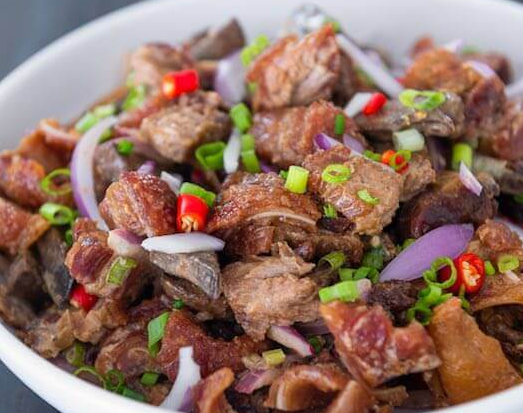

Dinakdakan

Dinakdakan is a famous savory, smoky, and creamy grilled pork dish from the Ilocos region of the Philippines. Dinakdakan uses boiled and grilled pig parts like the face (maskara), ears, and liver. It has a smoky flavor from the grill and a rich, creamy sauce traditionally made with mashed pig's brain, though mayonnaise is now a very common substitute. It is tangy from vinegar or calamansi and spicy from chili peppers. People usually eat it as pulutan (beer match) or with warm rice.
Ingredients
- Pork parts: 1 kg mix of pig ears, pig face/maskara, and pork liver
- Aromatics for boiling: 1 tbsp salt, 1 tsp whole peppercorns, 3 bay leaves, and water
- Creamy base: ½ cup mayonnaise (or traditional boiled and mashed pig's brain)
- Acid/Tang: ¼ cup vinegar (like sukang Ilokos) or calamansi juice
- Veggies & Spices: 2 red onions (sliced thin), 1 thumb-size ginger (minced fine), 2–3 Thai chili peppers (siling labuyo, chopped)
- Seasoning: Salt and Ground black pepper to taste
Step-by-Step Process
1. Boil the pork: In a large pot, combine the pig ears, face, and liver with water, salt, peppercorns, and bay leaves. Simmer for 40 to 60 minutes until the meat is tender.
2. Drain and cool: Remove the meat from the pot and let it cool completely.
3. Grill the meat: Grill the boiled pork parts over hot coals until they have a light char and smoky flavor.
4. Chop the ingredients: Cut the grilled ears, face, and liver into small, bite-sized pieces.
5. Make the dressing: In a large mixing bowl, whisk together the mayonnaise (or mashed pig's brain), vinegar or calamansi juice, minced ginger, and half of the sliced onions. Season with salt and pepper
6. Toss together: Add the chopped grilled pork and remaining onions into the bowl. Mix well until every piece is coated in the creamy dressing.
7. Add heat: Stir in the chopped chili peppers.
8. Rest and serve: Let the dish sit for 10 minutes so the flavors blend, then serve.